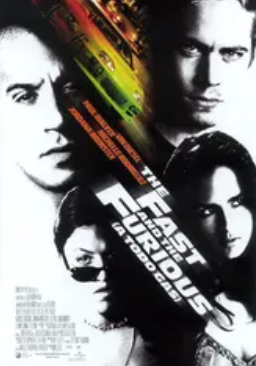
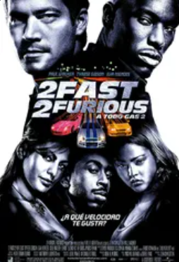
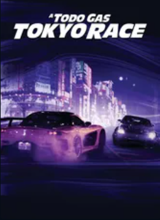
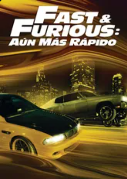
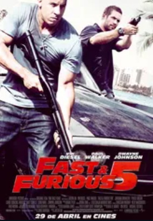
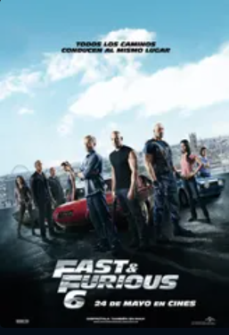
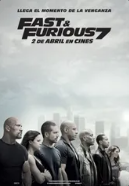
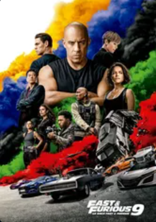

Resultados de búsqueda
-

Fast & Furious
Una misteriosa banda de delincuentes se dedica a robar camiones en plena marcha desde vehículos deportivos. La policía decide infiltrar a un hombre en el mundo de las carreras ilegales para descubrir posibles sospechosos. El joven y apuesto Brian entra en el mundo del tuning donde conoce a Dominic, rey indiscutible de este mundo y sospechoso número uno, pero todo se complica cuando se enamora de la hermana de éste.
2001
-

Fast & Furious: 2
Brian O'Connor, un policía caído en desgracia, fue un adicto a la velocidad y ahora está pagando un precio por ello. Tal y como lo ven sus antiguos jefes y los altos mandos del FBI, este agente de incógnito les echó a perder una de las investigaciones más importantes que habían emprendido.
2003
-

A todo gas: Tokyo Race
Shaun Boswell es un chico que no acaba de encajar en ningún grupo. Su única conexión con el mundo de indiferencia que le rodea es a través de las carreras ilegales, lo que no le ha convertido en el chico favorito de la policía. Cuando amenazan con encarcelarle, le mandan fuera del país a pasar una temporada con su tío, un militar destinado en Japón. En el país donde nacieron la mayoría de los coches modificados, las simples carreras en la calle principal han sido sustituidas por el último reto automovilístico que desafía la gravedad, las carreras de "drift" (arrastre), una peligrosa mezcla de velocidad en pistas con curvas muy cerradas y en zigzag. En su primera incursión en el salvaje mundo de las carreras de "drift", Shaun acepta ingenuamente conducir un D.K, el Rey del Drift, que pertenece a los Yakuza, la mafia japonesa. Para pagar su deuda, no tiene más remedio que codearse con el hampa de Tokio y jugarse la vida.
2006
-

Fast & Furious: Aún más rápido
El fugitivo y ex preso Dom Toretto y el detective Brian O’Conner vuelven a encontrarse en Los Ángeles y siguen llevándose igual de mal. Sin embargo, obligados a enfrentarse a un enemigo común, no les queda más remedio que unir sus fuerzas si quieren vencerle. Después del atraco a un convoy, los dos protagonistas descubrirán que si quieren vengarse, deberán llegar al límite de sus posibilidades al volante... Nueva entrega de la serie que volvió a contar con su -ahora ya famosos- 4 protagonistas originales, circustancia que resaltan en su original leyenda: "Nuevo modelo. Piezas originales".
2009
-

Fast & Furious 5
Desde que Brian O'Conner (Paul Walker) y Mia Toretto (Jordana Brewster) sacaron a Dom Toretto (Vin Diesel) de la cárcel, se han visto obligados a huir y cruzar muchas fronteras para evitar a la policía. Atrapados en Río de Janeiro, una vez más tienen que darse a la fuga si quieren conservar la libertad. Pero los tres saben muy bien que la única posibilidad que tienen de poner fin a esta situación es enfrentarse de una vez por todas al empresario corrupto que quiere verlos muertos. Pero éste no es el único que les sigue la pista
2011
-

Fast & Furious 6
Desde que Dom y Brian destruyeron el imperio de un mafioso y se hicieron con cien millones de dólares, se encuentran en paradero desconocido; no pueden regresar a casa porque la ley los persigue. Entretanto, Hobbs ha seguido la pista por una docena de países a una banda de letales conductores mercenarios, cuyo cerebro cuenta con la inestimable ayuda de la sexy Letty, un viejo amor de Dom que éste daba por muerta. La única forma de detenerlos es enfrentarse a ellos en las calles, así que Hobbs le pide a Dom que reúna a su equipo en Londres. ¿Qué obtendrán a cambio? Un indulto para que todos puedan volver a casa con sus familias.
2013
-

Fast & Furious 7
De nuevo los problemas les persiguen. Sin conseguir librarse de la mancha de criminales de su ficha. Su pasado de larga trayectoria en las carreras ilegales les perseguirá y deberán hacer frente a las circunstancias de la única forma que saben. Cuando les pongan entre la espada y la pared idearán un plan para escapar del peligro en una trepidante carrera por salvar la vida y limpiar su reputación. Acción, persecuciones y un ritmo frenético en esta nueva entrega.
2015
-

Fast & Furious 8
La carrera ha comenzado. Dom Toretto y su equipo volverán en esta ocasión con más ganas de guerra que nunca. No faltarán los excesos de velocidad y la adrenalina a raudales para un filme del que se espera que sea la entrega con más acción de esta saga callejera por excelencia.
2017
-

Fast & Furious: 9
Dom Toretto lleva una vida tranquila con Letty y su hijo, el pequeño Brian, pero saben que el peligro siempre acecha. Esta vez, esa amenaza obligará a Dom a enfrentarse a los pecados de su pasado si quiere salvar a quienes más quiere. El equipo se vuelve a reunir para impedir un complot a escala mundial, liderado por uno de los asesinos más peligrosos y mejor conductor a los que se han enfrentado; un hombre que además es el hermano desaparecido de Dom, Jakob. Novena entrega de la famosa franquicia.
2021